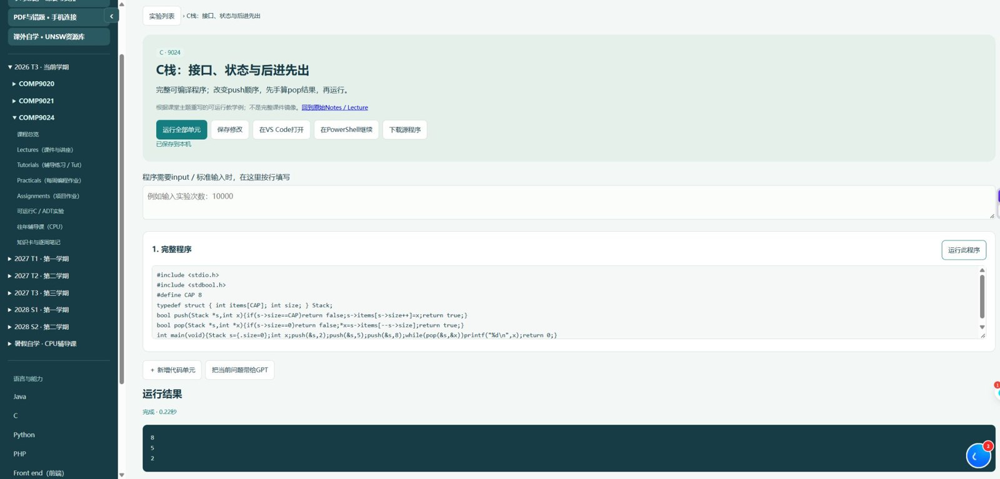
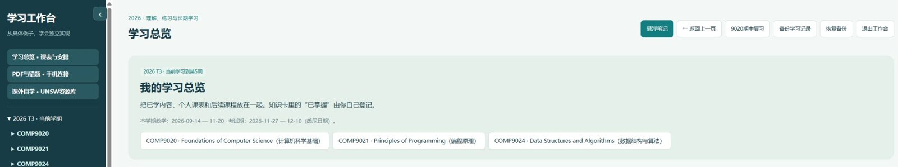

A personal learning workspace把课程、实验与工具放在一起
Plain JavaScript interfaces connect to a Python server, SQLite records and local programming runtimes. Editable notebooks, standard input and result panels support an example-first study workflow.

A standalone C stack example completed successfully and produced 8, 5, 2. Other modules include study notes, document/mistake tools, a mobile companion and backup/restore.
Browse source / 查看源码 →Download demo snapshot / 下载演示源码Project notes / 项目说明
The application runs locally. This page presents public screenshots and source; it does not expose a remote code-execution service. Personal study data and course PDFs are excluded from the public snapshot.